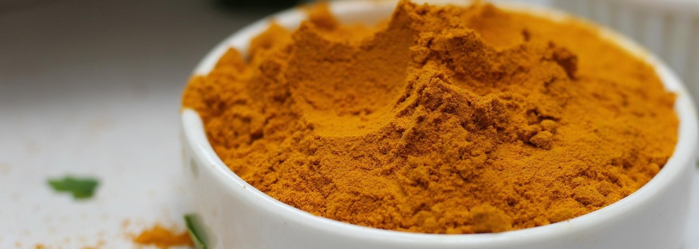

Indian Yellow
The Yellow That Came from Cows
Origin
Indian Yellow was produced in India, specifically the Bihar region near Monghyr (modern Munger), from the 15th to the 20th century. The pigment's source was as unusual as it was controversial: the urine of cows fed exclusively on mango leaves (Mangifera indica). The cows were kept on a restricted diet, their urine collected, dried, and pressed into balls of golden pigment.
Why this region?
The production was tied to specific agricultural practices and cattle-rearing traditions in Bihar. The mango trees provided the unique diet that produced the distinctive yellow compound, and the knowledge of processing the urine was passed down through generations of pigment makers.
History
The pigment was known in India as “peorī” or "gogilī” and was used by Persian and Indian artists for centuries before reaching Europe. The name "Indian Yellow" emerged when the pigment was exported to Europe in the 18th century. European painters were captivated by its clear, golden luminosity—a warmth and transparency that other yellows couldn't match. The pigment was expensive, often adulterated with cheaper inorganic yellows like lead chromate. Authentic Indian Yellow has a distinctive property: it fluoresces bright yellow under long-wavelength ultraviolet light.
Production was prohibited in 1908 because the mango-leaf diet was harmful to the cattle. The ethical concerns—starving cows to produce luxury pigment—ended the trade. Modern commercial paints labeled "Indian Yellow" contain synthetic coal-tar derivatives, not the original organic compound.
How was it made?
The process was organic and labor-intensive:
- Cows were fed exclusively on mango leaves—a diet that produced urine rich in magnesium euxanthate, the yellow compound.
- Urine was collected and dried, forming a sediment.
- The dried material was washed and powdered, producing a clear, golden yellow.
- The powder was pressed into balls for transport and sale.
The chemical composition is magnesium euxanthate. The pigment is soluble in water, dilute acids, ether, and alcohol.
What makes it dangerous?
Indian Yellow itself is not notably toxic to artists. The compound, magnesium euxanthate, poses minimal health risks through normal use. The ethical toxicity was to the animals: the mango-leaf diet was harmful to the cattle, leading to their suffering and eventual ban on production. The adulterated versions—cut with lead chromate—were toxic due to the lead content, which can cause neurological damage, anemia, and organ failure.
Artists who used Indian Yellow
-
- Vincent Van Gogh
- He used Indian Yellow in The Starry Night (1889). The deeper yellow strokes of the moon and stars include Indian Yellow mixed with zinc yellow, while the brighter yellows may be cadmium yellow. Van Gogh's letters reveal his intense engagement with pigment choices—he sought colors that conveyed emotion, not just appearance.
-
- Georges Seurat
- He used Indian Yellow in Seascape at Port-en-Bessin (1888), demonstrating the pigment's appeal to the Pointillists, who built images from tiny dots of pure color.
-
- Johannes Vermeer
- He used Indian Yellow in Girl with a Pearl Earring (1665-1666) and Woman in Blue Reading a Letter (1663-1664), subtle uses that contributed to the warmth of skin tones and fabrics.
Famous Works Featuring Indian Yellow
-
- The Starry Night — Vincent van Gogh (1889)
-
- Seascape at Port-en-Bessin — Georges Seurat (1888)
-
- Girl with a Pearl Earring — Johannes Vermeer (1665-1666)
-
- Woman Reading a Letter — Johannes Vermeer (1663-1664)
-
- Rajput and Mughal paintings — Indian Yellow was a staple of these traditions